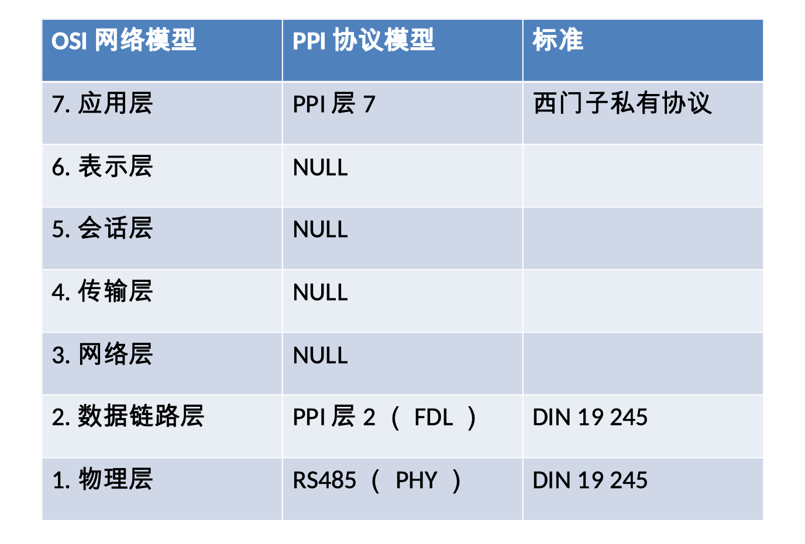

协议介绍
MPI( Multi Point Interface ), PPI( Point To Point Interface )是西门子自定义的私有通信协议，基于PROFIBUS DIN 19 245，并且根据 ISO/OSI 模型构建分层架构，专为控制单元（PLC、工业计算机）和分布式外围设备（远程传感器和执行器）之间的通信而设计。

MPI PPI 实现了层1，层2 和层7， 其余层（层3，层4，层5，层6）在MPI PPI的实现中为空的
MPI（MutiPoint Interface），MPI是完整功能版本，PPI是MPI的简化版本。PPI只支持9.6K和19.2K波特率，PPI只支持默认的SAP（Service Access Point） 所以PPI和MPI的底层是兼容的，例如令牌的处理等.
以下以MPI作为示例进行讲解，PPI大部分情况也适用，除了少数细节不相同
MPI通信有以下几个特征:
- MPI 有两种类型的设备：主站和从站
- MPI网络是一个令牌网，只有持有令牌的主站，才允许主动向其他PPI站点发送请求消息
- 从站不能持有令牌，只允许响应来自其他主站的请求